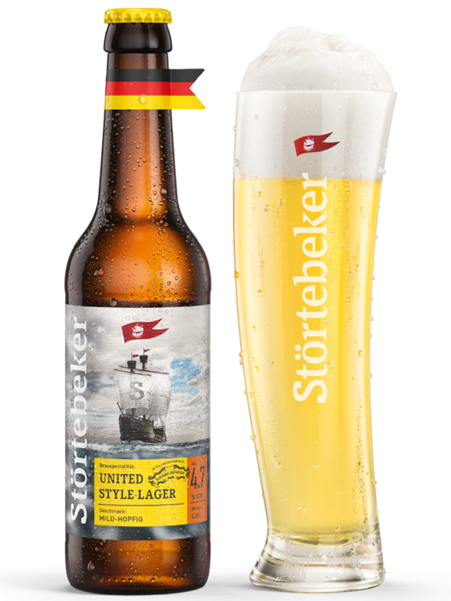
New!
Störtebecker United Style-Lager
€4,90
Mild, gently hopped style lager.
Seasonal Specials

€4,90
Mild, gently hopped style lager.
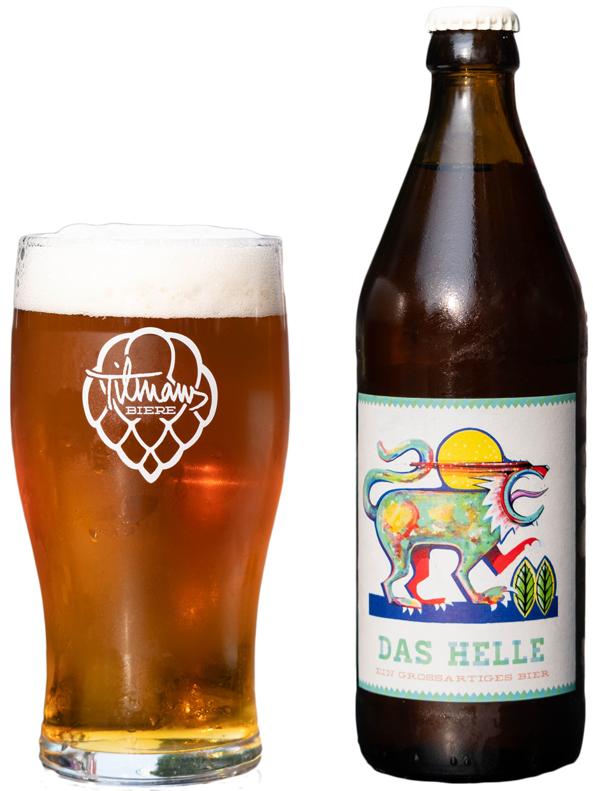
€5,80
Smooth, balanced Munich-style helles.
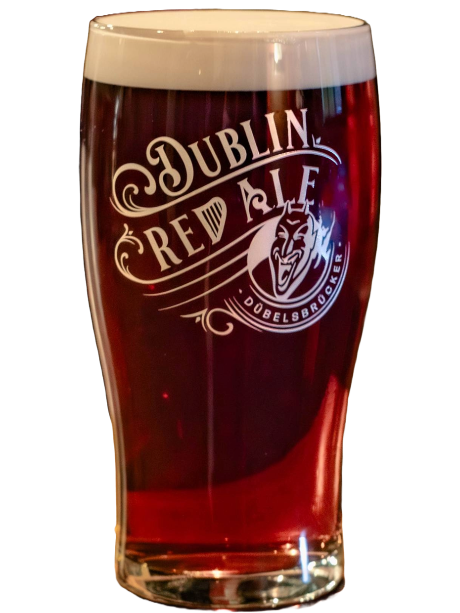
€6,90
Malty Irish red with a smooth finish.
Alcohol-Free
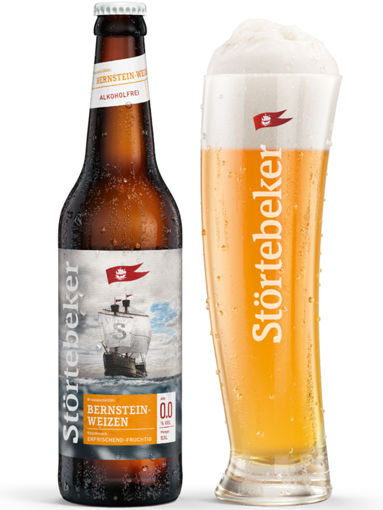
€5,80
Full weizen taste, zero alcohol.
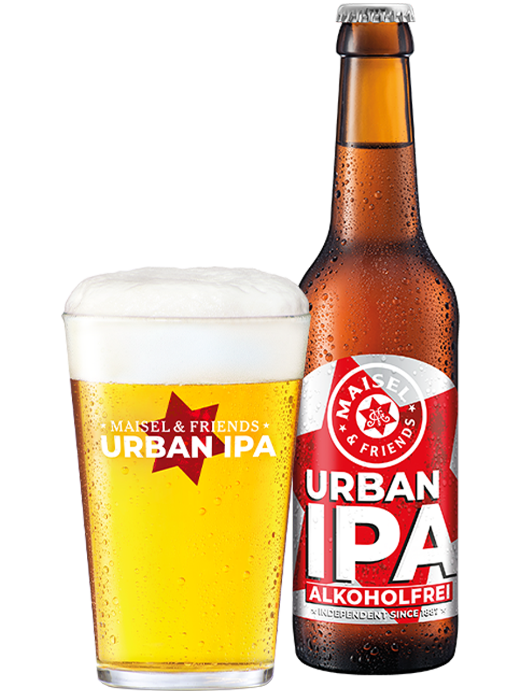
€4,90
Hoppy IPA character, alcohol-free.
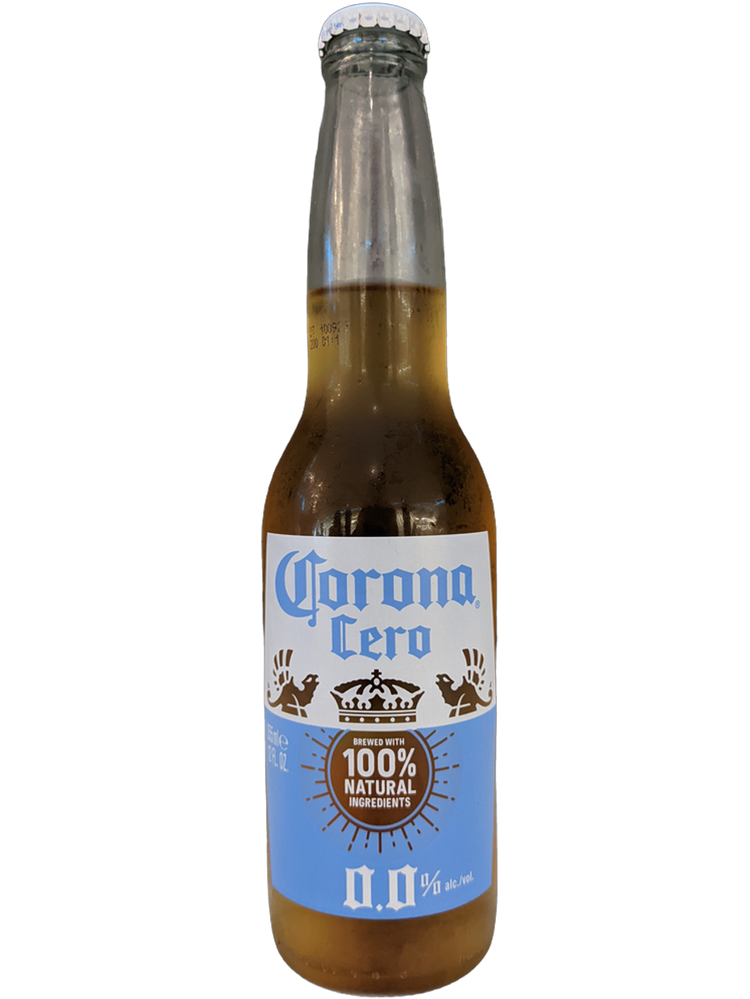
€4,90
Crisp lager taste, 0.0%.
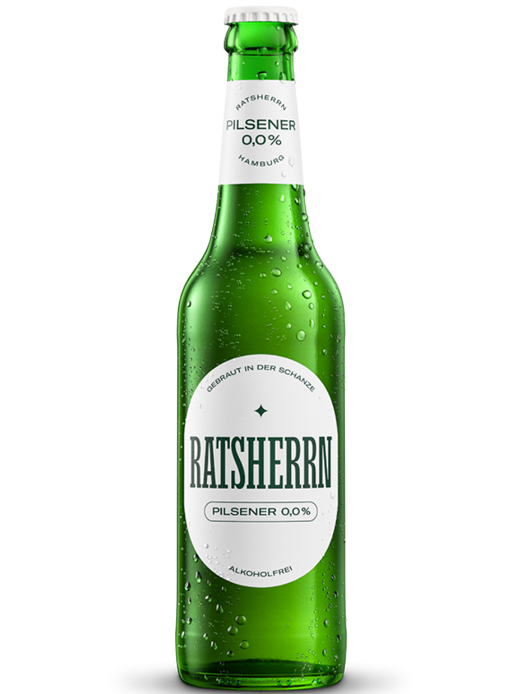
€5,00
Hamburg-brewed pilsner, alcohol-free.
Whiskey Specials
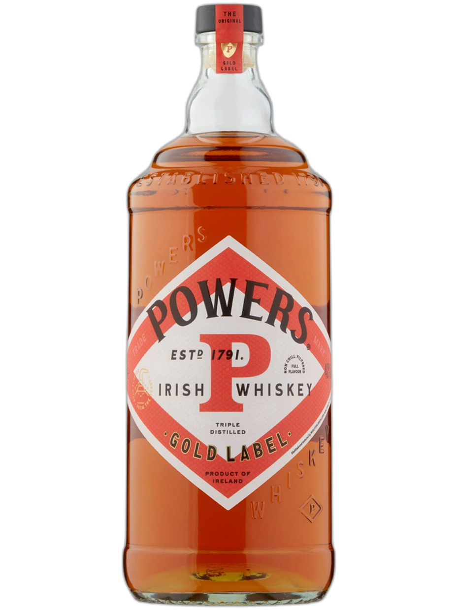
€7,00
Classic Irish pot still, spicy and smooth.
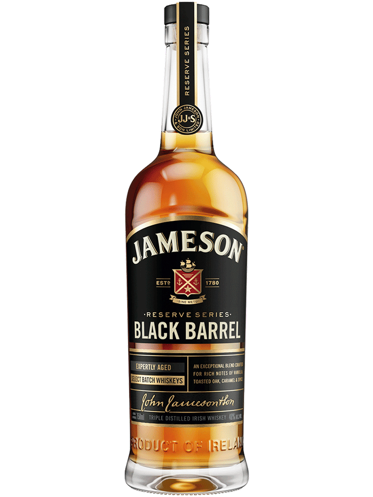
€6,70
Rich and toasty, from double-charred casks.
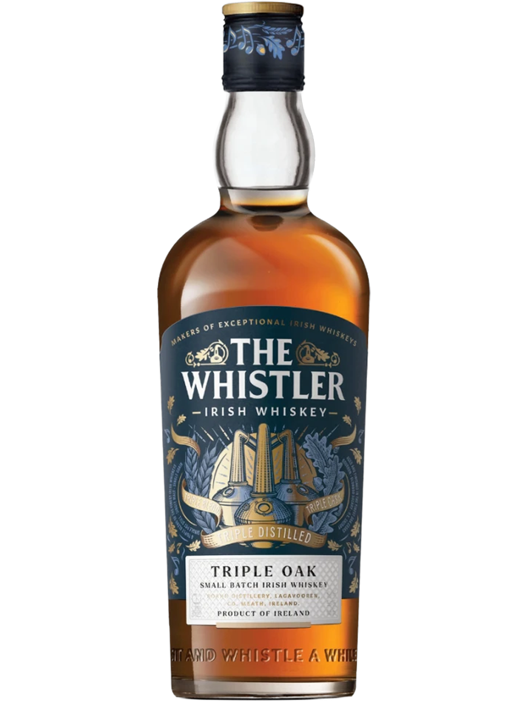
€7,50
Small-batch Irish whiskey from the Boann distillery.
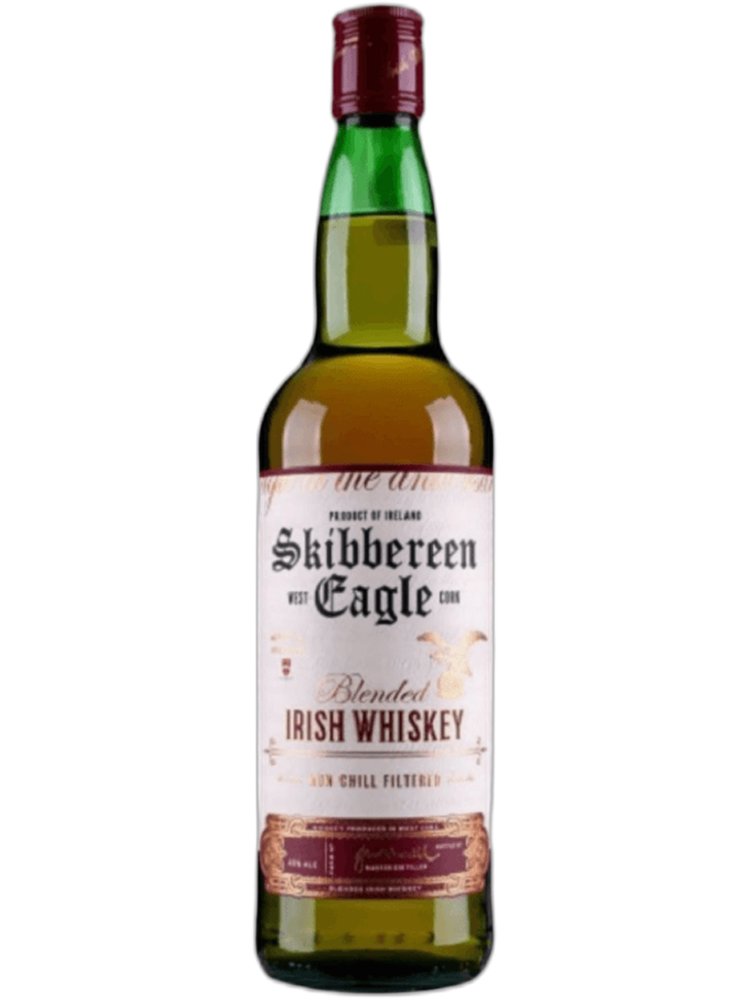
€5,50
West Cork single malt, light and fruity.